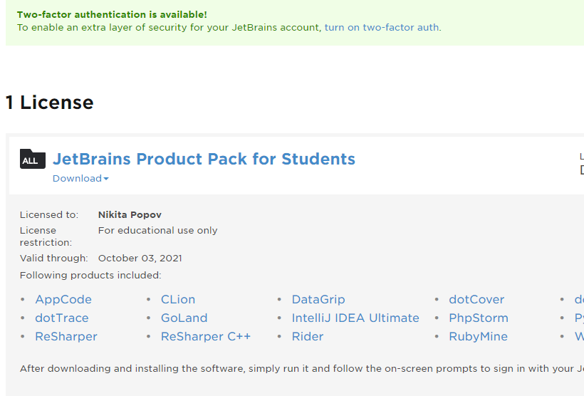
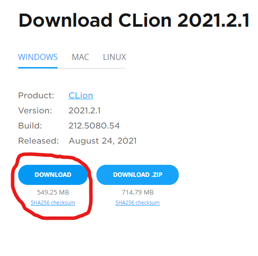

Инструкция по установке CLion
Получение студенческой лицензии и скачивание дистрибутива
-
Переходим по ссылке, подаём заявку через физтеховскую почту в домене phystech.edu. Таким образом получаем аккаунт на jetbrains.com со студенческой лицензией на их продукты.
-
Далее авторизуемся на сайте здесь. Попадаем на следующую страницу:
 -
Кликаем мышкой на «Download» и скачиваем CLion:
Запускаем .exe-шник, устанавливаем в выбранную папочку.
Установка компилятора и подключение его к IDE.
-
В нашем курсе я рекомендую компилятор MinGW-GCC, собранный с дополнительными библиотеками и установщиком одним из сотрудников Microsoft, который можно скачать по этой ссылке. Там же внизу есть и инструкция на английском. Если кратко, то запустите установщик и выберите папочку для установки (рекомендуется устанавливать в корневой каталог диска C — там CLion обнаружит компилятор автоматически).
-
Запустив IDE, создайте новый проект. Придумайте для него название и задайте 17-й стандарт. Как только проект загрузится, у вас появится специальное окошко, которое обнаружит MinGW у вас на машине: в противном случае укажите ссылку на папку с компилятором (например,
C:\MinGW) в поле Environment. Остальные поля должны загрузиться самостоятельно! Запустив программу (зелёный треугольничек), наслаждайтесь тем, как она приветствует мир.